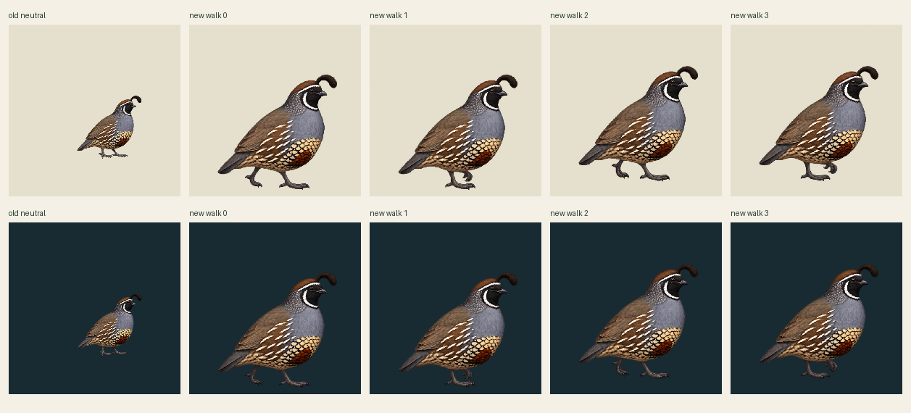
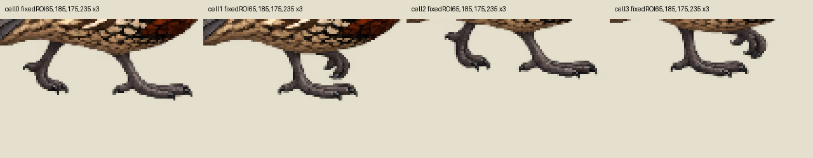

One authorized native call, four equal actual627-pixel cells. No retry. All panels retain the declared236.307692world extent on a237-pixel padded canvas at density1. Body width enlarged from88 to164world pixels; lower atlas row shifted upward12world pixels. No per-pose fitting, scale correction, body painting or foot snap is applied.
Exact old individual · light
Raw new cell · light
Single codec export · light
Exact old individual · dark
Raw new cell · dark
Single codec export · dark
The line marks the inherited reference root/floor proposal at185; it is not a runtime surface. New feet visibly lie below it. This failed registration is retained. Four4tick phases at30Hz, nonlooping16ticks; last actual pose held and replay explicit. Actual toe variants resemble two main support/passing categories; alternating anatomical support is unverified. No completed walk, planted support or intermediate motion is claimed.
Raw cells/samplePNG and codecPNG remain separate. Single pooled63-color palette plus transparent, alpha128, no dither. One common168×175 crop has zero nonzero cleanedRGBA discard, but four-frame area117600 exceeds the requested compact family budget. The actual shared checker result is retained separately; no shrink or per-variant workaround.


Source art only. Input5 common-family schema is not an activity authorization; no private pins or rights approval. Contacts[]/geometryReviewed=false/supportWorld=null. Independent source review pending.
Exact source and anchor evidence